Current regenerated research graphs. Each chart has a cream Substack version,
a #F5F5F5 The Margin of Error version, a 300-dpi PNG, editable-text SVG and complete
chart data. Both backgrounds use identical data and geometry.
2023-2024 research snapshot. Provisional assignments and assistant-reviewed diagnostics are not independently validated findings. No party-policy comparison or website publication is approved.
Evidence
Fifty-state source progress
Closed collection scopes are not completed studies
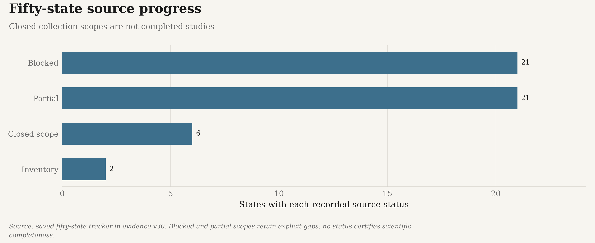
substack PNG · substack SVG · themarginoferror PNG · themarginoferror SVG
Complete chart CSV
Source: saved fifty-state tracker in evidence v37. Blocked and partial scopes retain explicit gaps; no status certifies scientific completeness.
The retained 2023-2024 bill evidence
Separate overlapping metadata/native channels; not the final recovered-text totals
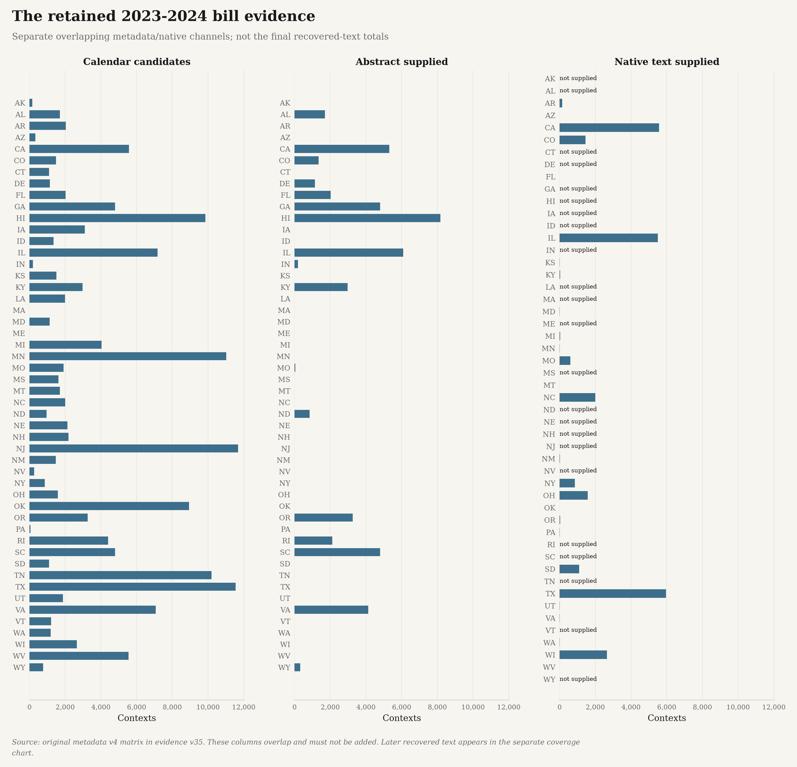
substack PNG · substack SVG · themarginoferror PNG · themarginoferror SVG
Complete chart CSV
Source: original metadata v4 matrix in evidence v37. These columns overlap and must not be added. Later recovered text appears in the separate coverage chart.
Publisher identities without inflated bill counts
Complete retained source evidence; unknowns preserved
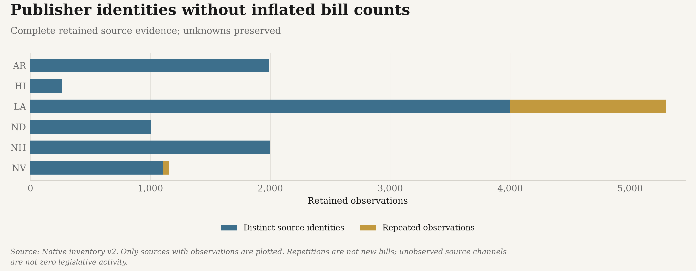
substack PNG · substack SVG · themarginoferror PNG · themarginoferror SVG
Complete chart CSV
Source: Native inventory v2. Only sources with observations are plotted. Repetitions are not new bills; unobserved source channels are not zero legislative activity.
Session membership and calendar evidence differ
Complete retained source evidence; unknowns preserved
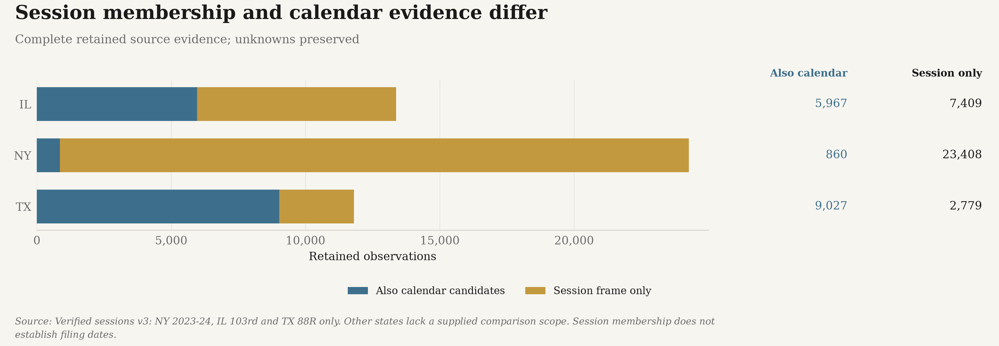
substack PNG · substack SVG · themarginoferror PNG · themarginoferror SVG
Complete chart CSV
Source: Verified sessions v3: NY 2023-24, IL 103rd and TX 88R only. Other states lack a supplied comparison scope. Session membership does not establish filing dates.
Arkansas: text recovered, gaps retained
Complete retained source evidence; unknowns preserved
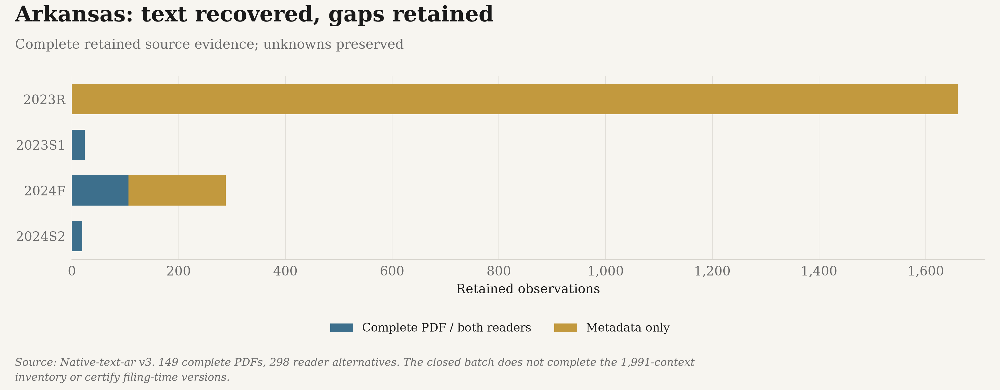
substack PNG · substack SVG · themarginoferror PNG · themarginoferror SVG
Complete chart CSV
Source: Native-text-ar v3. 149 complete PDFs, 298 reader alternatives. The closed batch does not complete the 1,991-context inventory or certify filing-time versions.
Recovered text without double-counting bills
50 states accounted for; 49 with cohort contexts
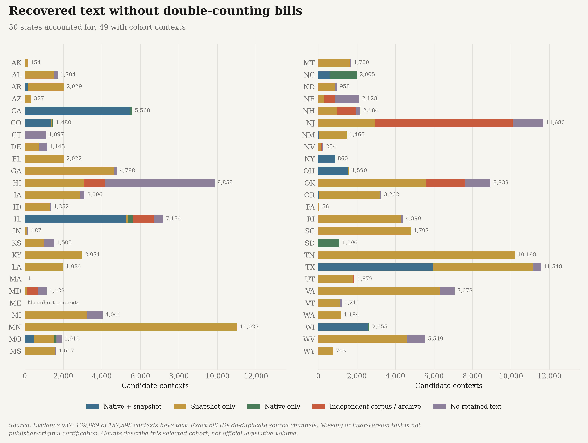
substack PNG · substack SVG · themarginoferror PNG · themarginoferror SVG
Complete chart CSV
Source: Evidence v37: 139,869 of 157,598 contexts have text. Exact bill IDs de-duplicate source channels. Missing or later-version text is not publisher-original certification. Counts describe this selected cohort, not official legislative volume.
Classifier candidates have mixed development results
Saved assistant-reviewed development sets, not independent validation
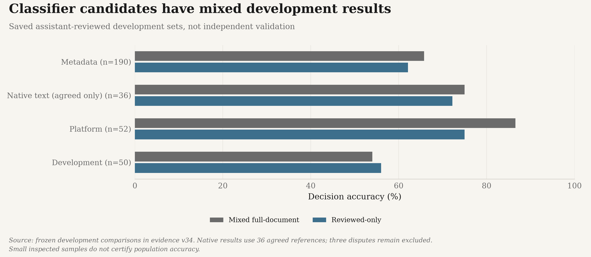
substack PNG · substack SVG · themarginoferror PNG · themarginoferror SVG
Complete chart CSV
Source: frozen development comparisons in evidence v37. Native results use 36 agreed references; three disputes remain excluded. Small inspected samples do not certify population accuracy.
Native-text precision and coverage are different
Saved assistant-reviewed development sets, not independent validation
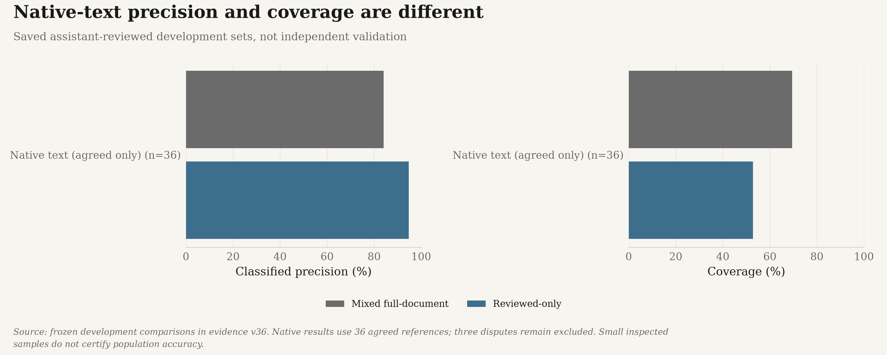
substack PNG · substack SVG · themarginoferror PNG · themarginoferror SVG
Complete chart CSV
Source: frozen development comparisons in evidence v37. Native results use 36 agreed references; three disputes remain excluded. Small inspected samples do not certify population accuracy.
The historical platform record ends in 2017
Missing state-party documents remain missing
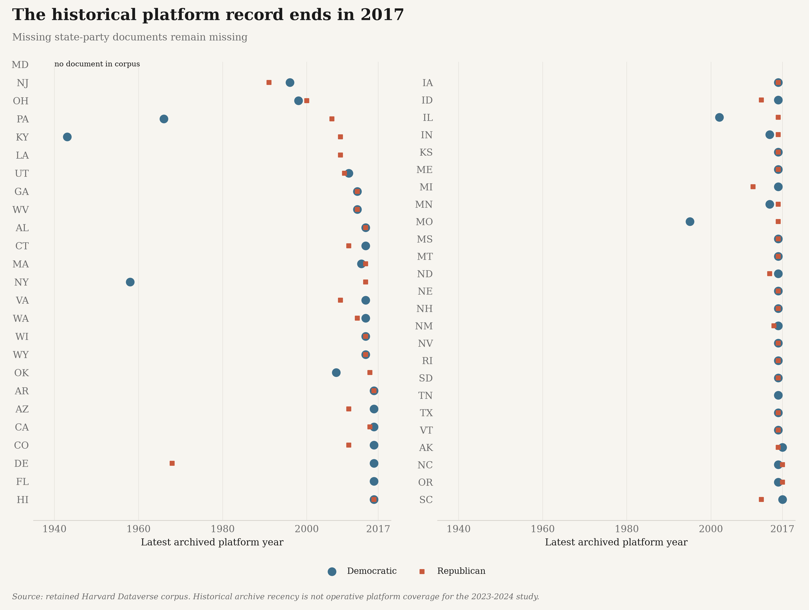
substack PNG · substack SVG · themarginoferror PNG · themarginoferror SVG
Complete chart CSV
Source: retained Harvard Dataverse corpus. Historical archive recency is not operative platform coverage for the 2023-2024 study.
Modern platform collection outcomes
Recorded source outcomes, not adopted 2023-2024 platforms
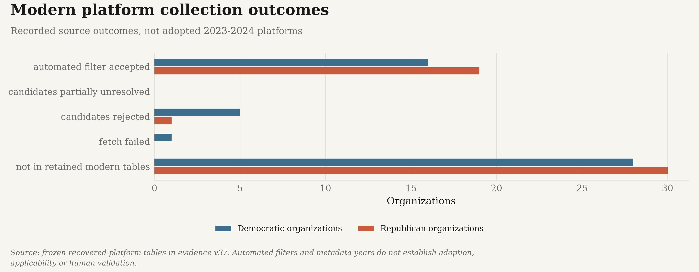
substack PNG · substack SVG · themarginoferror PNG · themarginoferror SVG
Complete chart CSV
Source: frozen recovered-platform tables in evidence v37. Automated filters and metadata years do not establish adoption, applicability or human validation.
Years in the recovered platform metadata
Recorded source outcomes, not adopted 2023-2024 platforms
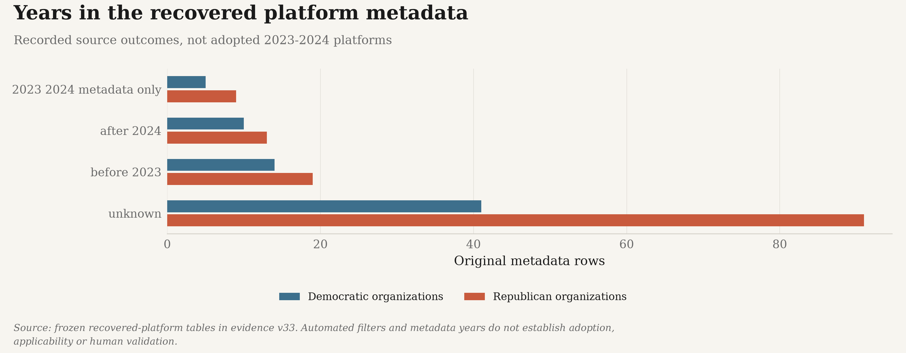
substack PNG · substack SVG · themarginoferror PNG · themarginoferror SVG
Complete chart CSV
Source: frozen recovered-platform tables in evidence v37. Automated filters and metadata years do not establish adoption, applicability or human validation.
Retained responses are not distinct platforms
All 1,559 capture attempts; duplicates and failures stay visible
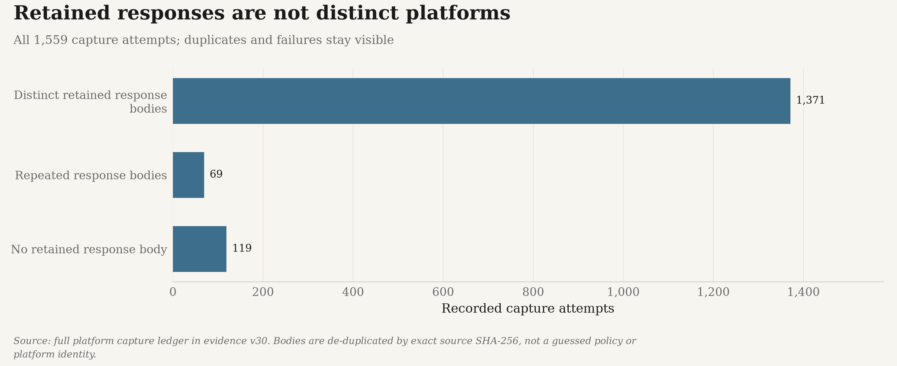
substack PNG · substack SVG · themarginoferror PNG · themarginoferror SVG
Complete chart CSV
Source: full platform capture ledger in evidence v37. Bodies are de-duplicated by exact source SHA-256, not a guessed policy or platform identity.
Recorded legislative stages
Source action classifications; not certified final legal outcomes
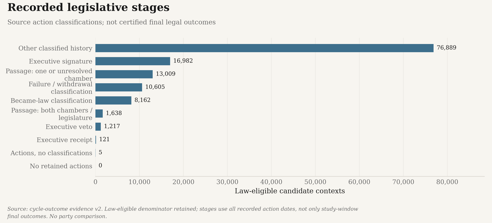
substack PNG · substack SVG · themarginoferror PNG · themarginoferror SVG
Complete chart CSV
Source: cycle-outcome evidence v2. Law-eligible denominator retained; stages use all recorded action dates, not only study-window final outcomes. No party comparison.
Recorded legislative stages, by state
Source action classifications; not certified final legal outcomes
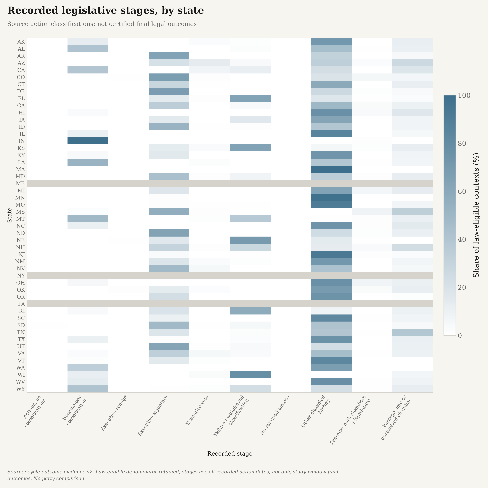
substack PNG · substack SVG · themarginoferror PNG · themarginoferror SVG
Complete chart CSV
Source: cycle-outcome evidence v2. Law-eligible denominator retained; stages use all recorded action dates, not only study-window final outcomes. No party comparison.
Context
Longer context adds assignments and differences
Selected pilot only; no population result or model has been replaced
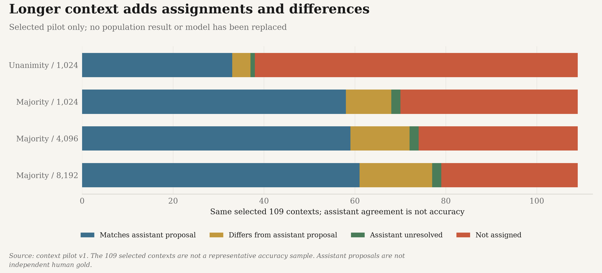
substack PNG · substack SVG · themarginoferror PNG · themarginoferror SVG
Complete chart CSV 1 · Complete chart CSV 2 · Complete chart CSV 3
Source: context pilot v1. The 109 selected contexts are not a representative accuracy sample. Assistant proposals are not independent human gold.
The measured cost of longer context
Exact cached windows were reused, not counted as new work
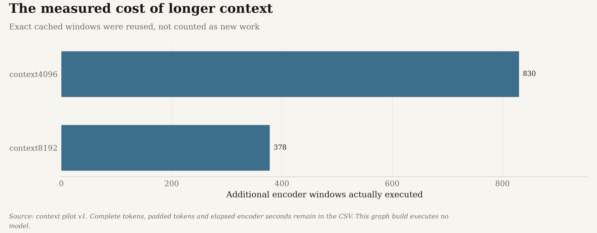
substack PNG · substack SVG · themarginoferror PNG · themarginoferror SVG
Complete chart CSV
Source: context pilot v1. Complete tokens, padded tokens and elapsed encoder seconds remain in the CSV. This graph build executes no model.
These separately saved
local bundles contain the complete original policy text, predictions and source
alternatives. They are not replaced by metadata downloads, and are not supplied
by a Git clone. Their historical graphs remain frozen.
The thirteen historical PNGs directly in the
outputs directory are legacy, not regenerated findings. Use this index and the
two categorized background folders for the current collection. Unsupported
party/platform comparisons have not been relabelled as current results.